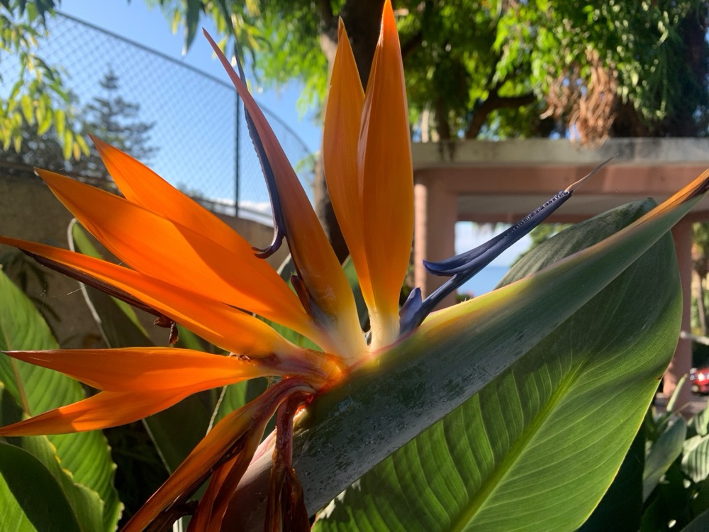

Your business.
Our address.
Madeira.
A professional business address in Funchal for companies, entrepreneurs, investors and international businesses seeking a credible local presence and a practical foundation for operating in Madeira.
A professional presence, without the overhead of a conventional office.
MV OFFICE gives your business a real Funchal address and the practical services that make a local presence easier to manage.
A professional foundation for your Madeira presence.
One clearly defined membership designed around the practical requirements of establishing and maintaining a professional local business presence.
Professional business address
Use a real Funchal business address for your business presence and correspondence.
Registered office use
Available where permitted and subject to the applicable requirements for your business.
Mail checked daily
Incoming correspondence is checked and you are notified when mail arrives.
Scanning by email
Important correspondence can be securely scanned and sent to you electronically.
One coworking day each month
Use the workspace when you are in Madeira, with printer and scanner access.
Local business introductions
When appropriate, we can help connect you with relevant local professionals.
Basic client support
A straightforward local point of contact for practical questions and requests.
More services when required
Additional MV OFFICE services can be arranged separately as your needs develop.
Beyond the address.
The address establishes your local presence. From there, your requirements may extend into professional, property and operational services. MV OFFICE can facilitate relevant local introductions, helping international clients access established businesses and specialist expertise in Madeira.
Accountancy & business
Accountants, tax specialists, business consultants and other professional services.
Legal & corporate
Where appropriate, introductions to solicitors and other specialist professional advisers.
Property & AL
Property management, Alojamento Local support and other property-related services.
Property care
Cleaning, gardening, maintenance and other practical services around your Madeira requirements.
MV OFFICE provides the professional address and the first layer of local support. As requirements develop, relevant introductions can extend your access to established independent businesses and professional specialists across Madeira. Specialist services are contracted directly with the selected provider.
A local presence.
An international outlook.
Madeira is an autonomous region of Portugal and part of the European Union, with Funchal at the centre of the island’s commercial and administrative activity. Its business environment supports local and international activity through professional services, infrastructure, telecommunications and specialist providers.
For entrepreneurs, investors and international companies, establishing a local presence can be a practical first step in developing relationships, coordinating requirements and understanding the market. MV OFFICE provides that first layer: a professional Funchal address supported by a wider network of local connections.
A credible starting point for businesses that intend to operate, invest or develop relationships in Madeira.

A structured start in Madeira.
The process is designed to be clear from the outset, giving you a professional local presence first and the flexibility to develop from there.
Set your local presence
Choose the MV OFFICE membership and establish your professional business address in Funchal, subject to the applicable requirements.
Manage your correspondence
Use the address for your business requirements, with daily mail handling, notifications, scanning and your included coworking access.
Extend your local network
As requirements evolve, additional MV OFFICE services and relevant local professional connections can be arranged according to your needs.
The practical questions.
Clear information before you decide.
Is this a real physical address?
Yes. MV OFFICE operates from a physical business location in Funchal. It is not a PO Box.
Can I use it as my registered office?
Registered-office use is available where permitted and subject to the applicable requirements. We confirm the relevant requirements for your situation before activation.
What happens when my mail arrives?
Mail is checked daily. You are notified when correspondence arrives and important documents can be scanned securely and sent by email.
Is forwarding included?
No. Physical forwarding is an additional service, so you only pay for it when you need it.
What does the €300 annual membership include?
The core membership includes the professional address, mail handling and notifications, scanning, one coworking day per month with printer/scanner access, basic support and appropriate local introductions.
Do I need to live in Madeira?
No. The service is designed to support businesses and professionals who need a local Madeira presence, including international clients.
Can MV OFFICE provide an accountant or lawyer?
MV OFFICE does not replace specialist professional advisers. Where appropriate, we can help introduce you to independent local professionals who may be relevant to your requirements.
Can I request other services?
Yes. Additional MV OFFICE services can be arranged separately. The current Services & Price Guide sets out the available options and applicable charges.
Establish your Madeira presence.
Build from there.
Tell us what you are looking to establish in Madeira. We will explain the MV OFFICE membership and, where appropriate, identify relevant local connections for the next stage of your requirements.
Rua dos Piornais Nº18, -19C
São Martinho
9000-679 Funchal, Madeira
Portugal